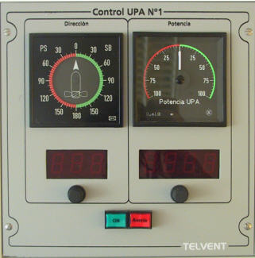

Propulsión Auxiliar
La Consola de Propulsión incorpora dos módulos idénticos de Propulsión Auxiliar, mediante los cuales el operador puede controlar hasta dos propulsores auxiliares del buque. El tipo y posición de estos propulsores es una característica del modelo de buque controlado.

Contiene los siguientes elementos:
- Indicador analógico de Orientación Actual de UPA Nº 1 / UPA Nº 2: indicadores analógicos con iluminación regulable, centrados en cero y escala de –180º a +180º. Estos indicadores muestran en todo momento la dirección del movimiento actual de la UPA correspondiente. Si el propulsor lateral es de orientación fija (potencia variable), el indicador de orientación marcará 0º con el propulsor en reposo y la dirección del movimiento con el propulsor en funcionamiento.
- Indicador digital de Orientación Solicitada para UPA Nº 1 / UPA Nº 2: indicadores digitales de tres cifras, sobre los que se muestra el valor de orientación solicitado por el operador mediante el selector de orientación de la UPA correspondiente. Si el propulsor lateral es de orientación fija (potencia variable), este indicador permanece apagado siempre.
- Selector de Orientación Solicitada para UPA Nº 1 / UPA Nº 2: se trata de un selector giratorio mediante el cual el operador puede solicitar la orientación de la UPA correspondiente. Moviéndolo hacia la derecha se incrementa la orientación solicitada y hacia la izquierda disminuye, con un rango de 0 a 359º.
- Indicador analógico de Potencia Actual de UPA Nº 1 / UPA Nº 2: indicadores analógicos con iluminación regulable, centrados en cero y escala de –100% a +100%. Estos indicadores muestran en todo momento la potencia actual de la UPA correspondiente. Potencia positiva significan que la UPA actúa produciendo un empuje hacia estribor, y negativas hacia babor. Si el propulsor lateral es de potencia fija (orientación variable), el indicador de potencia marcará 0% con el propulsor en reposo y 100% con el propulsor en funcionamiento.
- Indicador digital de Potencia Solicitada para UPA Nº 1 / UPA Nº 2: indicadores digitales de tres cifras y signo, sobre los que se muestra el valor de potencia solicitado por el operador mediante el selector de potencia de la UPA correspondiente. Si el propulsor lateral es de potencia fija (orientación variable), este indicador permanece apagado siempre.
- Selector de Potencia Solicitada para UPA Nº 1 / UPA Nº 2: se trata de un selector giratorio mediante el cual el operador puede solicitar la potencia de la UPA correspondiente. Moviéndolo hacia la derecha se incrementa la potencia solicitada y hacia la izquierda disminuye, con un rango de – 100% a 100%.
- Pulsador e Indicador de ON / OFF de la UPA Nº 1 / UPA Nº 2: pulsador e indicador de encendido y apagado de la UPA correspondiente. Si el equipo se encuentra apagado este indicador permanece apagado. Si es pulsado, se encenderá de forma intermitente mientras el equipo se esté desplegando, y fijo cuando esté desplegado y listo para aplicar potencia. Si es pulsado de nuevo para su apagado, igualmente parpadeará mientras es recogido, y pasará a apagado una vez que esté recogido y apagado. En el caso de propulsores de orientación fija (potencia variable) este pulsador no parpadea sino que se enciende y apaga directamente, ya que estos equipos no se despliegan y recogen, por lo que no pasan por este estado transitorio.
- Indicador de Avería de la UPA Nº 1 / UPA Nº 2 y Pulsador de Enterado: este indicador rojo se ilumina de forma intermitente en rojo cuando el instructor introduce una condición de avería en la UPA correspondiente. Cuando el operador lo presiona (reconociendo la avería), el indicador se ilumina de forma fija, y finalmente se apaga cuando el instructor elimina la condición de avería de este equipo.